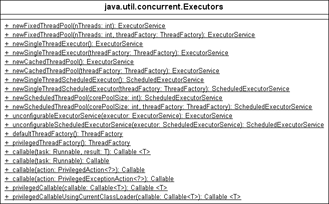

12.4 Der Ausführer (Executor) kommt
Zur parallelen Ausführung eines Runnable ist immer ein Thread notwendig. Obwohl die nebenläufige Abarbeitung von Programmcode ohne Threads nicht möglich ist, sind doch beide sehr stark verbunden, und es wäre gut, wenn das Runnable von dem tatsächlich abarbeitenden Thread etwas getrennt wäre. Das hat mehrere Gründe:
- Schon beim Erzeugen eines Thread-Objekts muss das Runnable-Objekt im Thread-Konstruktor übergeben werden. Es ist nicht möglich, das Thread-Objekt aufzubauen, dann über eine JavaBean-Setter-Methode das Runnable-Objekt zuzuweisen und anschließend den Thread mit start() zu starten.
- Wird start() auf dem Thread-Objekt zweimal aufgerufen, so führt der zweite Aufruf zu einer Ausnahme. Ein erzeugter Thread kann also ein Runnable duch zweimaliges Aufrufen von start() nicht gleich zweimal abarbeiten. Für eine erneute Abarbeitung eines Runnable ist also mit unseren bisherigen Mitteln immer ein neues Thread-Objekt nötig.
- Der Thread beginnt mit der Abarbeitung des Programmcodes vom Runnable sofort nach dem Aufruf von start(). Die Implementierung vom Runnable selbst müsste geändert werden, wenn der Programmcode nicht sofort, sondern später (nächste Tagesschau) oder wiederholt (immer Weihnachten) ausgeführt werden soll.
Wünschenswert ist eine Abstraktion, die das Ausführen des Runnable-Programmcodes von der technischen Realisierung (etwa den Threads) trennt.
12.4.1 Die Schnittstelle Executor
Seit Java 5 gibt es eine Abstraktion für Klassen, die Befehle über Runnable ausführen. Die Schnittstelle Executor schreibt eine Methode vor:
interface java.util.concurrent.Executor |
- void execute(Runnable command)
Wird später von Klassen implementiert, die ein Runnable abarbeiten können.
Jeder, der nun Befehle über Runnable abarbeitet, ist Executor.
Konkrete Executoren
Von dieser Schnittstelle gibt es bisher zwei wichtige Implementierungen:
- ThreadPoolExecutor: Die Klasse baut eine Sammlung von Threads auf, den Thread-Pool. Ausführungsanfragen werden von den freien Threads übernommen.
- ScheduledThreadPoolExecutor. Eine Erweiterung von ThreadPoolExecutor um die Fähigkeit, zu bestimmen Zeiten oder mit bestimmten Wiederholungen Befehle abzuarbeiten.
Die beiden Klassen haben nicht ganz so triviale Konstruktoren, und eine Utility-Klasse vereinfacht den Aufbau dieser speziellen Executor-Objekte.
class java.util.concurrent.Executors |
- static ExecutorService newCachedThreadPool()
Liefert einen Thread-Pool mit wachsender Größe. - static ExecutorService newFixedThreadPool(int nThreads)
Liefert einen Thread-Pool mit maximal nThreads. - static ScheduledExecutorService newSingleThreadScheduledExecutor()
- static ScheduledExecutorService newScheduledThreadPool(int corePoolSize)
Gibt spezielle Executor-Objekte zurück, um Wiederholungen festzulegen.
Abbildung 12.5: Die Schnittstelle ExecutorService, die Executor erweitert
ExecutorService ist eine Schnittstelle, die Executor erweitert. Unter anderem sind hier Operationen zu finden, die die Ausführer herunterfahren. Im Falle von Thread-Pools ist das nützlich, da die Threads ja sonst nicht beendet würden, weil sie auf neue Aufgaben warten.
Abbildung 12.6: Executor-Klasse mit statischen Methoden
12.4.2 Die Thread-Pools
Eine wichtige statische Methode der Klasse Executors ist newCachedThreadPool(). Das Ergebnis ist ein ExecutorService-Objekt, eine Implementierung von Executor mit der Methode execute(Runnable):
Listing 12.9: com/tutego/insel/thread/concurrent/ThreadPoolDemo.java, main() – 1
Runnable r1 = new Runnable() {
@Override public void run() {
System.out.println( "A1 " + Thread.currentThread() );
System.out.println( "A2 " + Thread.currentThread() );
}
};
Runnable r2 = new Runnable() {
@Override public void run() {
System.out.println( "B1 " + Thread.currentThread() );
System.out.println( "B2 " + Thread.currentThread() );
}
};
Jetzt lässt sich der Thread-Pool als ExecutorService beziehen und lassen sich die beiden Befehlsobjekte als Runnable über execute() ausführen:
Listing 12.10: com/tutego/insel/thread/concurrent/ThreadPoolDemo.java, main() – 2
ExecutorService executor = Executors.newCachedThreadPool();
executor.execute( r1 );
executor.execute( r2 );
Thread.sleep( 500 );
executor.execute( r1 );
executor.execute( r2 );
executor.shutdown();
Die Ausgabe zeigt sehr schön die Wiederverwendung der Threads:
A1 Thread[pool-1-thread-1,5,main]
A2 Thread[pool-1-thread-1,5,main]
B1 Thread[pool-1-thread-2,5,main]
B2 Thread[pool-1-thread-2,5,main]
B1 Thread[pool-1-thread-1,5,main]
B2 Thread[pool-1-thread-1,5,main]
A1 Thread[pool-1-thread-2,5,main]
A2 Thread[pool-1-thread-2,5,main]
Die toString()-Methode von Thread ist so implementiert, dass zunächst der Name der Threads auftaucht, den die Pool-Implementierung gesetzt hat, dann die Priorität und der Name des Threads, der den neuen Thread gestartet hat. Am neuen Namen ist abzulesen, dass hier zwei Threads von einem Thread-Pool 1 verwendet werden: thread-1 und thread-2. Nach dem Ausführen der beiden Aufträge und der kleinen Warterei sind die Threads fertig und für neue Jobs bereit, sodass A1 und A2 beim zweiten Mal mit den wieder freien Threads abgearbeitet werden.
Interessant sind die folgenden drei Operationen zur Steuerung des Pool-Endes:
interface java.util.concurrent.ExecutorService |
- void shutdown()
Fährt den Thread-Pool herunter. Laufende Threads werden nicht abgebrochen, aber neue Anfragen werden nicht angenommen. - boolean isShutdown()
Wurde der Executor schon heruntergefahren? - List<Runnable> shutdownNow()
Gerade ausführende Befehle werden zum Stoppen angeregt. Die Rückgabe ist eine Liste der zu beendenden Kommandos.
Ihr Kommentar
Wie hat Ihnen das <openbook> gefallen? Wir freuen uns immer über Ihre freundlichen und kritischen Rückmeldungen.
 Jetzt bestellen
Jetzt bestellen


{kind=link}
{kind=link}